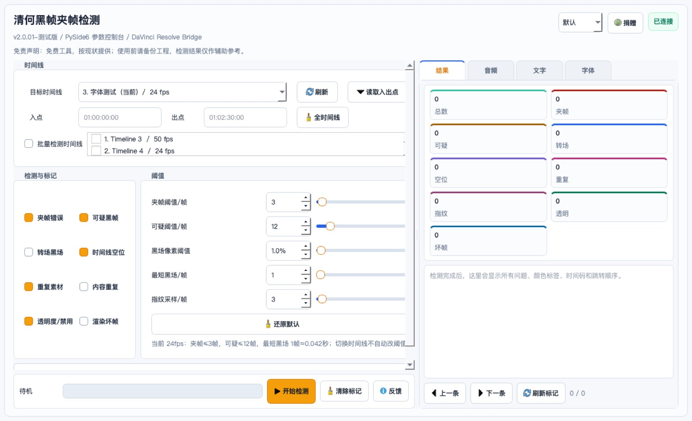
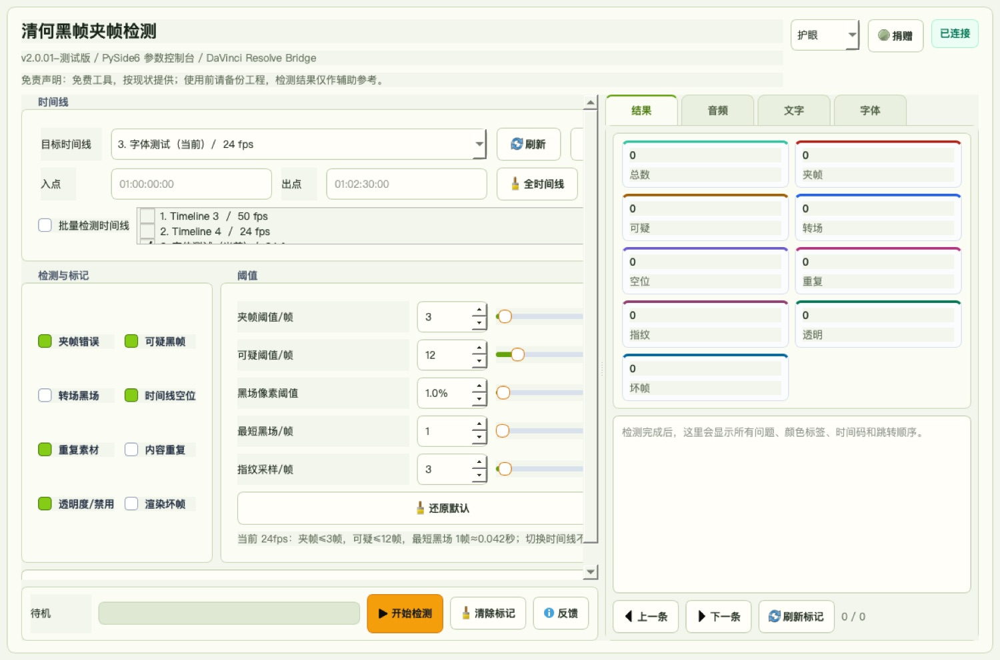
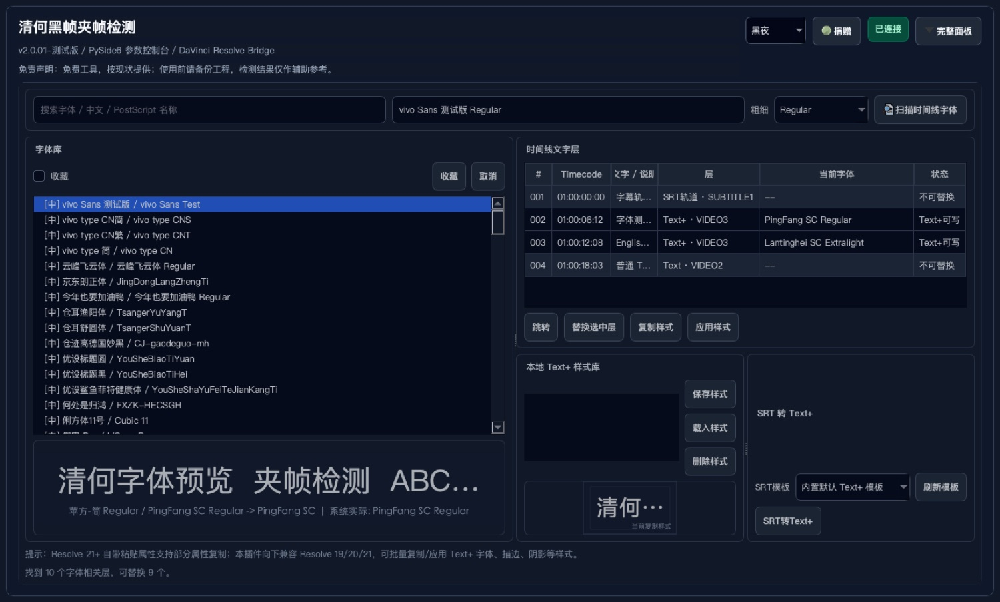

黑帧与夹帧检测
识别黑场、短黑帧、疑似夹帧和转场边界，按风险自动分类打标。
DaVinci Resolve 剪辑质检插件
把黑帧、夹帧、重复帧、坏帧、音频声道和 Text+ 字体问题集中检查， 自动打标回到时间线，少一点漏检，多一点交付前的安心。
给交片前的最后一遍检查
适合短剧、混剪、课程、口播、广告和批量交付项目。工具会把检测结果落到 Resolve 标记里， 你可以沿着标记逐条复核，不用在长时间线上来回盲找。
功能覆盖
识别黑场、短黑帧、疑似夹帧和转场边界，按风险自动分类打标。
辅助发现卡顿、重复画面、异常画面片段，适合长时间线复核。
辅助检查音频声道、静音和节奏相关问题，减少交付后的返工。
整理字体样式、检查文字模板，适合字幕、标题和包装类项目。
检测结果直接回到 Resolve 时间线，定位、复核、修正更顺手。
插件内可检查新版本，国内优先走 CNB，GitHub 和网盘作为备用。
真实界面



安装方法
当前 macOS 公开包未做 Apple Developer 公证，首次运行脚本时请右键选择“打开”。 安装完成后重启 DaVinci Resolve。
下载
推荐优先使用 CNB 国内源。GitHub Release 和百度网盘作为备用下载入口。 Windows 版等待 Windows 电脑打包测试后发布。
SHA256: 72ddb6a588e3b936a9489df1c47e40c7d4188076a015bf32466797c8a68f39dd
自愿支持
捐赠完全自愿，不对应功能解锁、抽奖返利或收益承诺。
本工具按“现状”提供，检测结果仅作辅助参考，不保证 100% 找出所有问题。 使用者应自行评估适用性，并在使用前做好项目备份。
工具不应上传工程文件、素材文件或完整时间线内容。匿名统计仅用于版本、平台和功能使用情况分析。